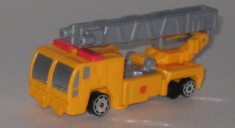
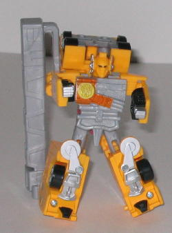
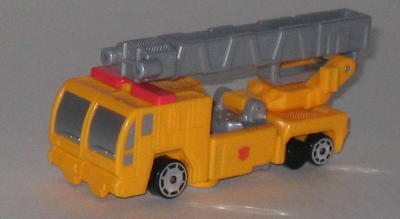
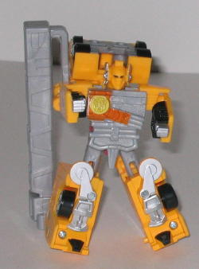
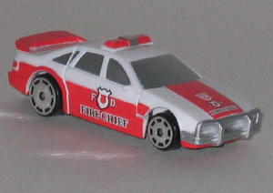
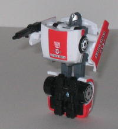

 
Allegiance : Autobot
Size : Basic
Difficulty of Transformation : Very Easy
Color Scheme : "Cheese" yellow, light gray, silver, black, and some light red, chrome silver, dull yellow, and dull orange
Rating : 4.6
Price : $6 (U.S.)
 Optimus
Prime (Basic)
Optimus
Prime (Basic)


Allegiance
: Autobot
Size
: Basic
Difficulty of Transformation
: Very
Easy
Color Scheme
: "Cheese" yellow, light
gray, silver, black, and some light red, chrome silver, dull yellow, and
dull orange
Rating
: 4.6
(NOTE: Because this is a repaint, this is not a full-blown review. This mainly covers any changes made to the mold and the color scheme, and merely compares it to the RiD Optimus Prime Basic. For a review on the mold itself, read the review of the RiD Optimus Prime Basic here .)
The Basic version of
Universe Optimus Prime actually has more of a color change done to him
than the
Super version
. Go fig. It's
still not a complete repaint- the light gray parts and black parts are
still the same as they were on the previous version, as are the paint apps
on the chest, unfortunately. But, just like the larger version, the RiD
version's red has been swapped for a less fitting cheese yellow. It's not
THAT bad, but the red looks much better. On a slight departure from the
Super Universe version, though, this version of Prime has silver windows,
which certainly mesh better with the yellow than the aforementioned version's
blue. The sirens are also now painted a light red, instead of just being
the color of the surrounding plastic. His head in robot mode is still severely
underdetailed, though, and the paint apps on his chest still look rather
sloppy.
No mold changes have
been made to Basic Universe Optimus Prime.
 Prowl
(Spychanger)
Prowl
(Spychanger)


Allegiance
: Autobot
Size
: Spychanger
Difficulty of Transformation
: Very
Easy
Color Scheme
: White, silver, light
red, black, dark gray, and some chrome silver
Rating
: 4.9
(NOTE: Because this is a repaint, this is not a full-blown review. This mainly covers any changes made to the mold and the color scheme, and merely compares it to the RiD Prowl 2 Spychanger. For a review on the mold itself, read the review of the RiD Prowl 2 Spychanger here .)
Like the larger version
of the RiD Prowl mold used in Universe
(Inferno)
,
Spychanger Prowl is a bit of a homage to
G1 Red
Alert
. He's got the same "F.D. FIRE CHIEF" insignias on his car doors
and front hood, as well as the same general colors. It's actually quite
a nice color scheme, although maybe the red could have been a shade darker.
In robot mode, the colors are complemented a bit more by black and some
gray as well. It's a surprisingly good-looking toy for a Universe Exclusive.
No mold changes have
been made to Universe Spychanger Prowl.
Universe Basic Optimus Prime and Spychanger Prowl are somewhat decent toys (if rather unarticulated with bad proportions), and you get them at a bit of a bargain price. Still, they aren't really anything spectacular, and Optimus Prime is a bit too similar to his previous version for my liking. Recommended only if you don't have any previous versions of these molds and have a thing for Spychangers.
No Stats
Review by Beastbot